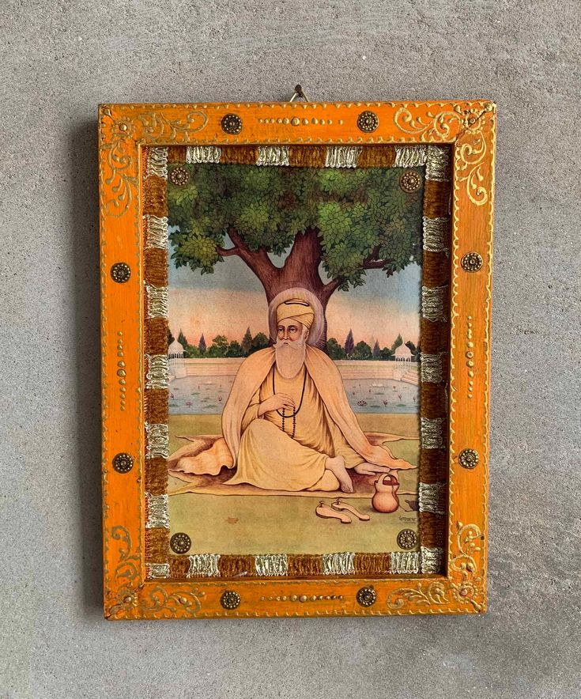

ਨਵਚੇਤਨਾ ਦਾ ਮਾਰਗ (नवचेतना का मार्ग)
सत्य, कर्म और भक्ति के मार्ग पर चलने से समाज में एकता और नवचेतना का संचार होता है। ਨਾਮ ਜਪਣਾ (नाम जपना), ਕਿਰਤ ਕਰਨੀ (किरत करनी) और ਵੰਡ ਛਕਣਾ (वंड छकना)—इन मूल सिद्धांतों के अनुसरण से समाज में आंतरिक शक्ति और एकता की भावना का विकास होता है। यह दृष्टिकोण संकीर्णता से परे था— इस चेतना का उद्देश्य केवल आत्मा की मुक्ति नहीं, बल्कि समाज के हर वर्ग और हर व्यक्ति का एकीकरण था। भारतीय संस्कृति की यही अमिट विशेषता है—वह आज भी शाश्वत जीवन मूल्यों में विश्वास करती है और समाज को मार्गदर्शन प्रदान करती है।
[14/11/2024]
(c) 2024 shvpnd.